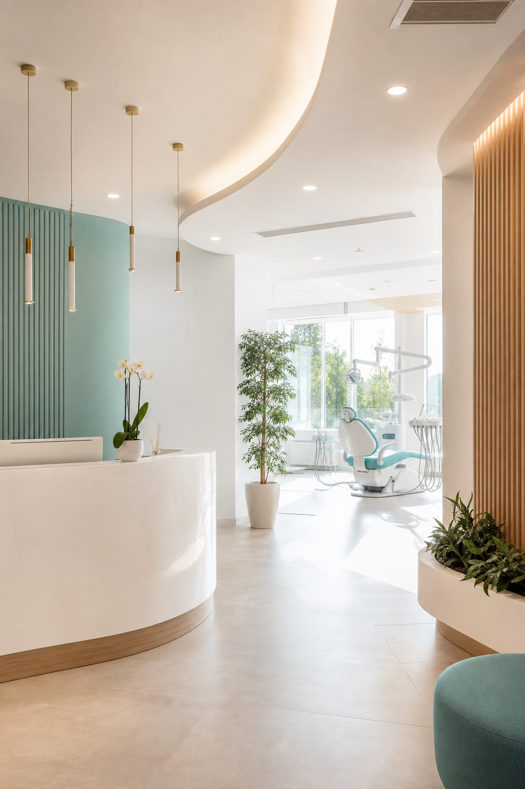

İmplant Tedavisi
Eksik dişler için muayene sonrası doğal görünümlü ve uzun ömürlü tedavi planı.
İstanbul merkezli modern ağız ve diş sağlığı kliniği
İmplant, estetik diş hekimliği, zirkonyum kaplama ve ortodonti süreçlerini uzman hekim planlamasıyla, steril ve konforlu klinik ortamında sunuyoruz.


Neden modern bir klinik sitesi?
Eski web siteleri klinik kalitesini anlatmakta zorlanır. Bu demo; tedavileri, hekim uzmanlığını, sterilizasyon yaklaşımını ve randevu akışını tek ekranda güvenilir şekilde gösteren yeni nesil bir klinik vitrini olarak hazırlandı.
Kliniğimizi yakından tanıyın
Video önizlemesi, sayfa yerel dosya olarak açıldığında çalışmaz.
Videoyu YouTube'da açEn çok aranan tedaviler
Eksik dişler için muayene sonrası doğal görünümlü ve uzun ömürlü tedavi planı.

Diş rengi, formu ve beklentiye göre doğal görünümü önceleyen estetik çözümler.

Şeffaf plak ve braket seçenekleriyle estetik, düzenli ve kontrollü tedavi.

Çocuklara özel sakin iletişim, koruyucu uygulamalar ve düzenli takip.
Hasta deneyimi

Sosyal kanıt
“İmplant sürecinde her adım sade şekilde anlatıldı. Randevu sonrası takip mesajı da çok rahatlattı.”
Ayşe K. · İmplant hastası“Estetik tedavide beklentim dinlendi, sonuç doğal oldu. Klinik çok temiz ve ekip çok ilgiliydi.”
Mert A. · Estetik diş hekimliği“Çocuğum ilk kez korkmadan muayene oldu. Doktorumuz süreci oyun gibi anlattı.”
Ece T. · PedodontiOpsiyonel şube alanı
Birden fazla lokasyonu olan klinikler için şube kartları; adres, çalışma saatleri, telefon, harita ve ilgili şubeye özel randevu akışını net şekilde gösterir.
Nispetiye Cd. No:24, Etiler. İmplant, estetik diş ve protetik tedaviler.
Bağdat Cd. No:118, Suadiye. Ortodonti, şeffaf plak ve çocuk diş hekimliği.
Barbaros Mah. No:32. Genel muayene, protetik tedavi ve çocuk diş hekimliği.
Randevuya dönüştüren final alanı
Bu bölüm kliniklerin doğrudan hasta talebi toplaması için tasarlandı. Eski sitelerde dağınık kalan telefon, konum, WhatsApp ve form aksiyonları burada tek akışta birleşir.